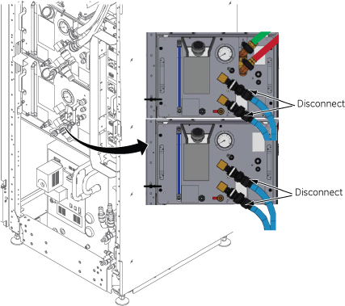
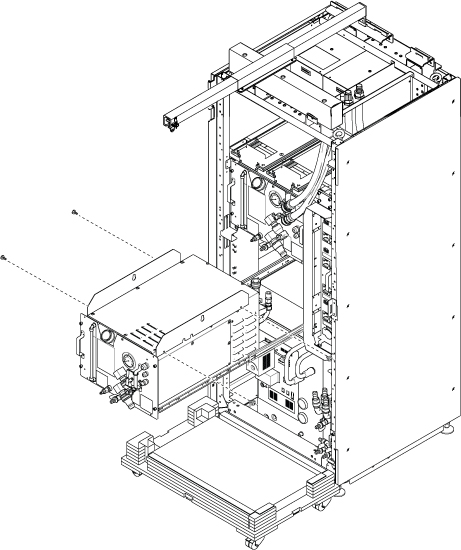

- 00000018WIA308DB230GYZ
- id_156675441.18
- Mar 26, 2025 7:38:41 PM
Replacing the Gradient Cooling Unit (GCU)
Prerequisites
| Required persons | Preliminary requirements | Procedure | Finalization |
|---|---|---|---|
| 1 | Not Applicable | 90 minutes | 15 minutes |
| Item | Quantity | Effectivity | Part number | Manufacturer |
|---|---|---|---|---|
| Standard Tool | 1 | - | - | - |
| 20L Draining Tank | 3 | - | - | - |
| Water Hand Pump | 1 | - | - | - |
| 150MM FUNNEL | 1 | - | - | - |
| Hoist Service Kit | - | - |
5196226 | - |
| Flexible Water Tank (In System) | 1 | - |
5342981 | - |
| Item | Quantity | Effectivity | Part number | Manufacturer |
|---|---|---|---|---|
| Towels | NA | - | - | - |
| Item | Quantity | Effectivity | Part number | Manufacturer |
|---|---|---|---|---|
| GCU | 1 | - |
Refer to FRU Manual | - |
| ||||||||
| Condition | Reference | Effectivity |
|---|---|---|
|
ICC facility water valve will be turned off. Check the hospital facility chiller valve integrity to avoid the excessive loads on the facility water pumps and lines. | - | - |
|
ISC Power must be turned OFF. Refer to Lockout / Tagout for ISC. | - | - |
Procedure
- Release the bands from the shipping base, flip the slide plate, and slide the FRU Box.
Figure 1. Slide GCU FRU Box 
- Open ICC Cover and remove it.
Figure 3. Remove cover 
- Confirm that ISC power is off and LOTO is performed. Then, check the followings.
- GCU/CCU pressure meter (black meter) is at zero.
- ICC Control Unit TCU display is OFF.
Figure 4. Pressure meters and TCU display 
1 Pressure meters 2 TCU display - Turn off the F50 Power.
- Turn off the “Drive Switch”.
- Turn off the “Main Power Switch”.
Figure 5. F50 Power OFF 
1 DRIVE switch 2 MAIN POWER switch
Turn OFF the supply and return valves for Facility Water in FPU.Notice Figure 6. Turn off valves for facility water 
- Drain the supply water to release the water pressure per following steps.
- Connect the hose to drain port of water supply.
- Insert the other side of hose into the flexible tank.
- Open valve and check that the pressure meter becomes zero.
- Close the valve and remove the hose.
Figure 7. Draining the supply water 
1 Pressure meter 2 Flexible tank 3 Hose connected to drain port 4 Valve - Disconnect the Blue Quick Disconnect hoses for GCU and CCU.Note CCU connectors are removed since they prevent the GCU from being slid out.Note When disconnecting the Blue Quick Disconnect hoses, disconnect quickly to avoid excessive spilling of coolant

Figure 15. Quick Disconnect Hoses 
- Setup Hoist. Refer to Hoist Setup.
Figure 17. Setup Hoist 
- Attach the lifting brackets to both sides of the GCU. The lifting brackets can be found in the GCU FRU crate.
Figure 20. Lifting Brackets 
Warning 
Restore the GCU by reverse order of removal.CAUTION 
- Open valve for Facility water.
Figure 27. Open Valve 
- Transfer the coolant to the other empty tank using funnel about 3~4L (1 gallon or so) for one hand operation.
Figure 28. Transfer Coolant 
- To prepare for a safe coolant refill, turn the sub breakers at the ISC Power Distribution Unit (PDU) off in the order below.
- (For the first rotation of coolant refill only) Turn the RF Amp sub breaker off.
- (For the first rotation of coolant refill only) Turn the Gradient sub breaker off.
- Turn the System Cooling sub breaker off.
Figure 29. ISC PDU sub breakers 
1 Gradient sub breaker 2 System Cooling sub breaker 3 RF Amp sub breaker
Finalization
- Perform check scan.
- Disassemble the hoist kit and restore it to the stored location.
- Package the FRU Box crate including the defective part and return.